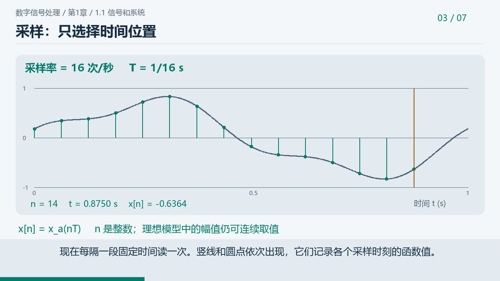
采样之后，为什么还要量化？
第1章 · 5分14秒
视频整理中 · 讲稿可阅
按教材章节排列 · 共13条微课

第1章 · 5分14秒
视频整理中 · 讲稿可阅
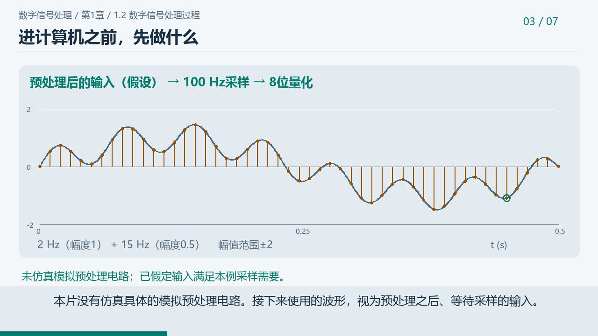
第1章 · 5分41秒
视频整理中 · 讲稿可阅
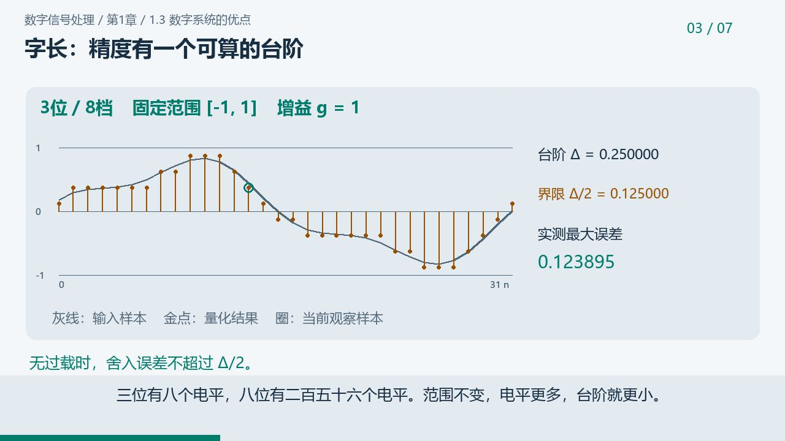
第1章 · 5分27秒
视频整理中 · 讲稿可阅
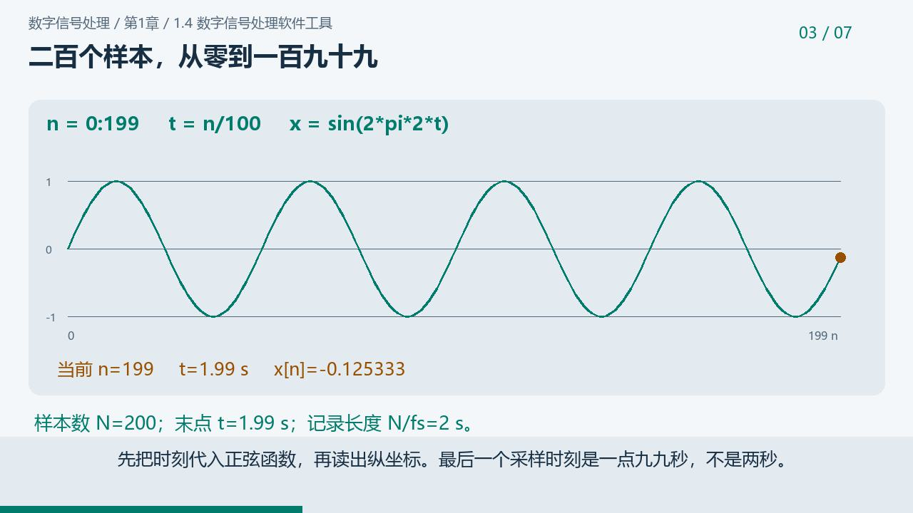
第1章 · 3分57秒
视频整理中 · 讲稿可阅
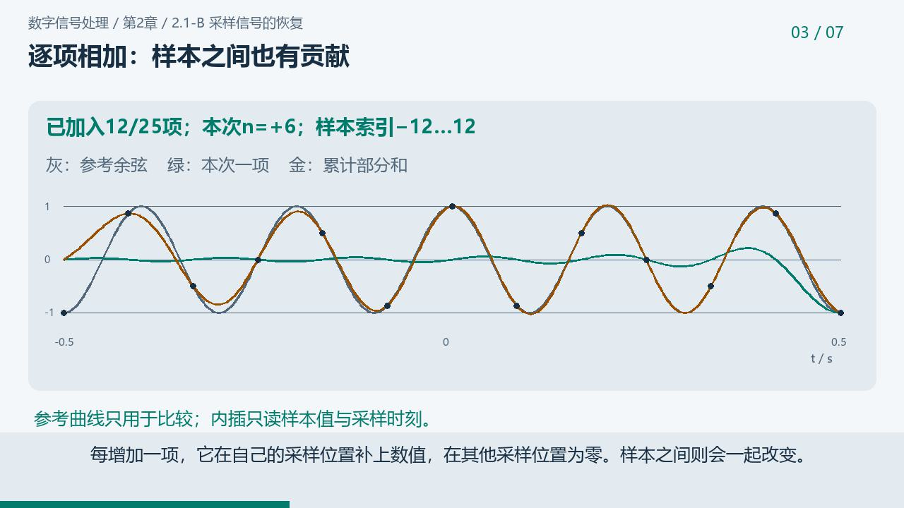
第2章 · 5分43秒
视频整理中 · 讲稿可阅
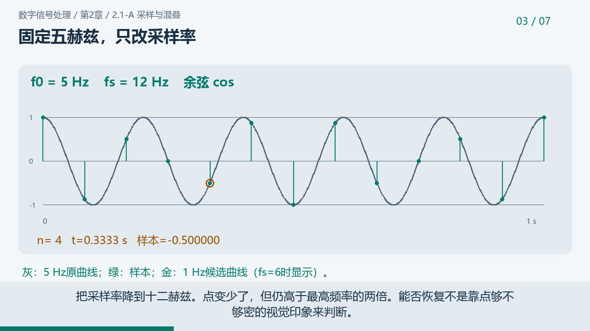
第2章 · 5分08秒
网盘视频已接入
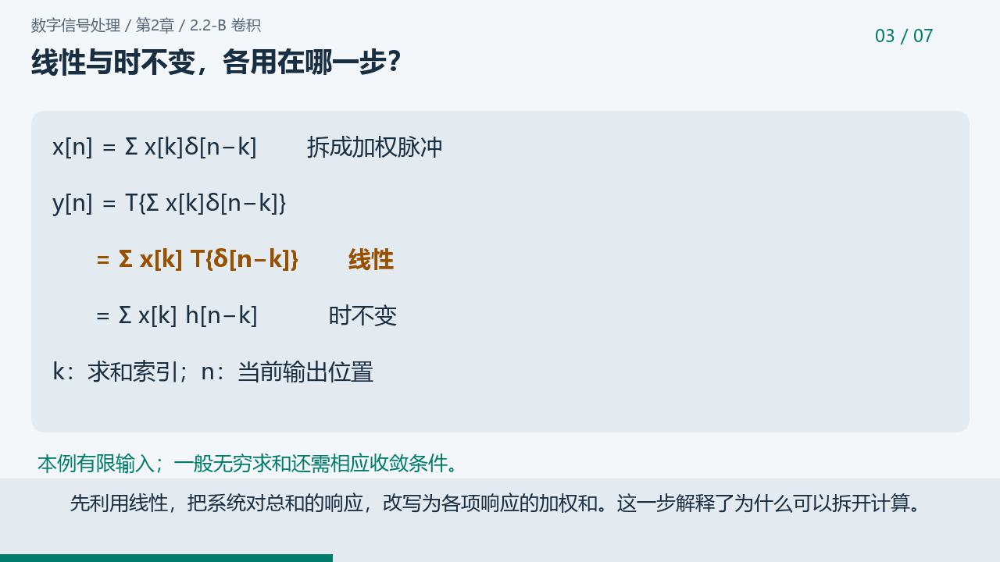
第2章 · 5分32秒
视频整理中 · 讲稿可阅
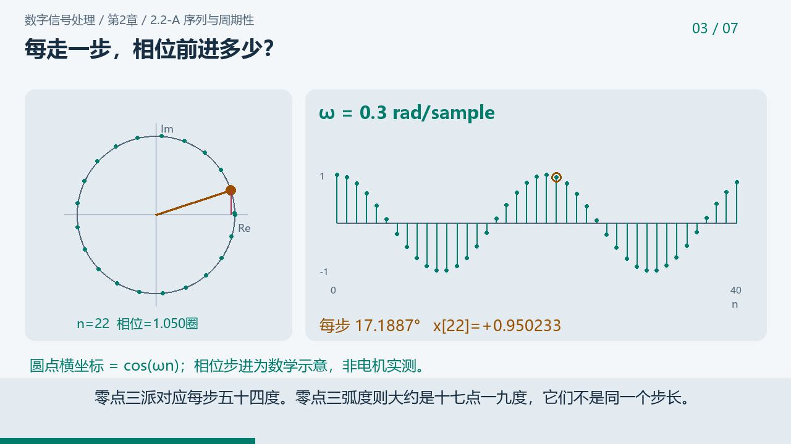
第2章 · 4分40秒
视频整理中 · 讲稿可阅
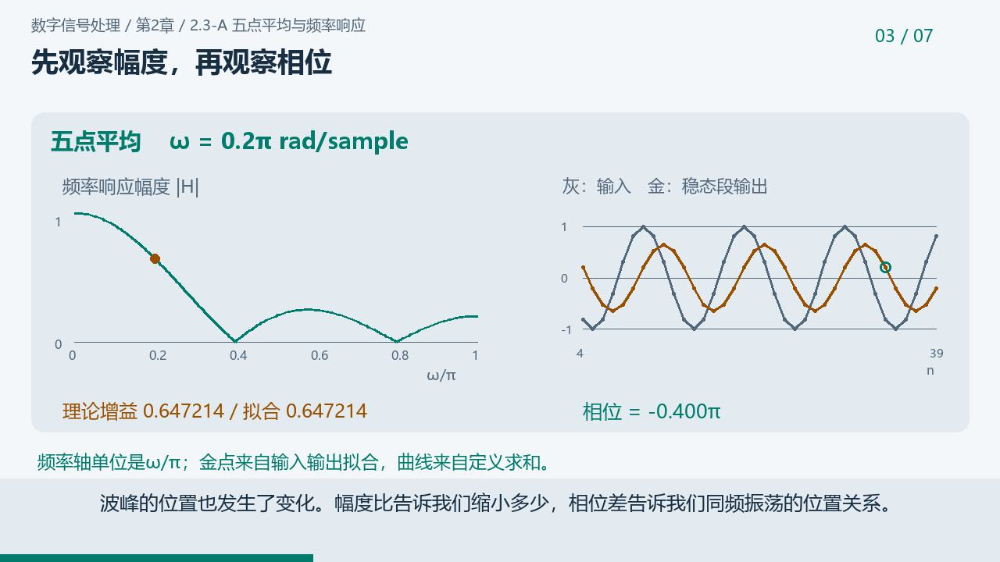
第2章 · 4分47秒
视频整理中 · 讲稿可阅
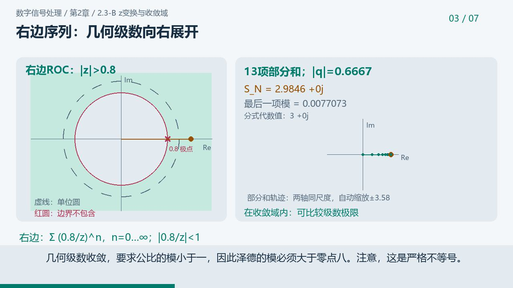
第2章 · 5分34秒
视频整理中 · 讲稿可阅
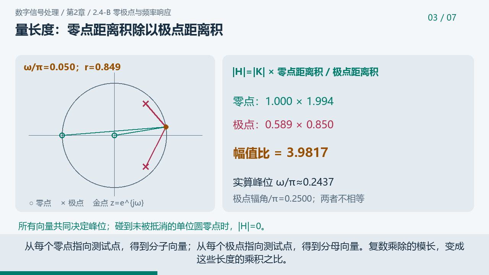
第2章 · 6分04秒
视频整理中 · 讲稿可阅
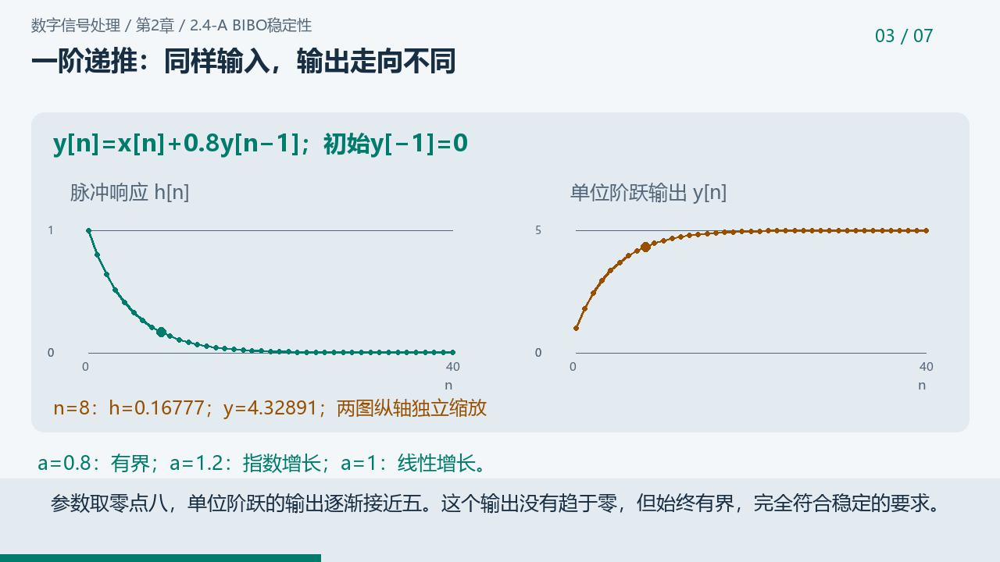
第2章 · 5分37秒
视频整理中 · 讲稿可阅
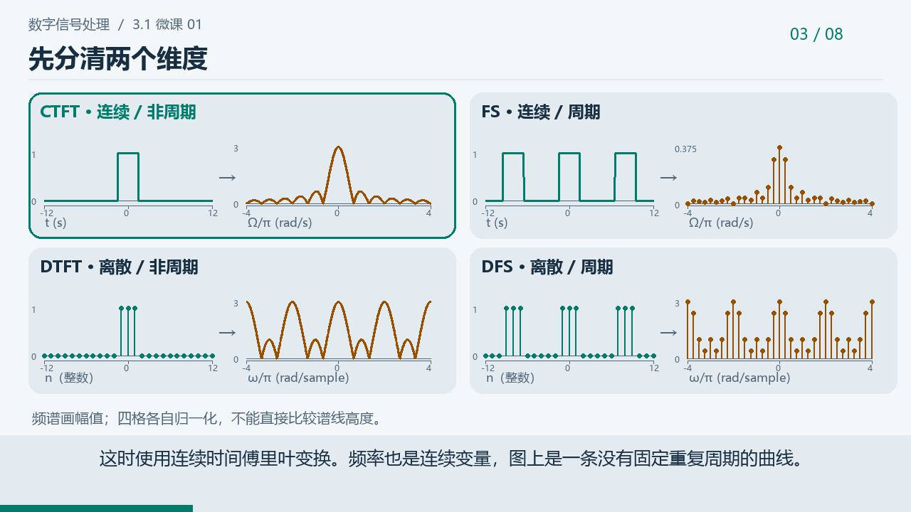
第3章 · 7分43秒
视频整理中 · 讲稿可阅